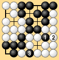
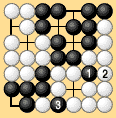
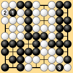

|  |  |
| 第3-3-1図 | 第3-3-2図 |
|---|
| 3.3 パス後の同形再現について(1) |
|---|
| 第3-3-1図の如く黒3と劫を取った後、白は一切の劫ダテがないから、白4の手をパスし、黒も勿論劫をつげないから黒もパスをして終局としたとき、第3-3-2図の下辺の黒は活となり、a点が日本流でいえば、カケ目であるので死石となる筈のものが除去し得ない。 |
|  | |
| 第3-3-1図 | 第3-3-2図 |
|---|
|
もしパス、パスの後同形再現打着を許せば勿論白はaに取返せるので、下辺の黒は死となる。これがパス3回で終局としようとした根拠でもある。これはパス3回で終局とすることに本質があるのではなく、パス、パスの後に同形再現打着を許すという点に問題があるのである。 第3-3-3図は黒3で劫を取る。白は一切の劫ダテはないが、黒は第3-3-4図a点に打着し得ない。もし黒がaに打着すれば、白はbに劫をトリ、逆に黒からの劫ダテがない。故に黒は3をとった後白パス黒パスとなって終局となる。 |
|  |  |
| 第3-3-3図 | 第3-3-4図 |
|---|
|
この場合にはa、b点が問題点となる。勿論中国ルールで第3-3-4図で終局しても、理論的に矛盾があるわけではないが、中国ルールの第I案(切賃あり)と第II案との差がこの図の場合に発生するのである。(切賃以外に) 石の存在権のみを問題にする第I案ではa、bが黒の得点にならないが、第II案では黒の地となることに注目されたい。 本図もパス、パスの後同形再現打着禁止ルールの例外を認めれば、パス、パスの後白がbに劫を取返せるから、黒はaにツギ、白がbを取って、黒がdに打着して白がツイで終わる。 ここにパスの後の同形再現打着禁止ルールに例外を設けるかの問題がある。 これは日本式の慣習法や新ルールに於いても最後に生ずる特殊問題の解決のためにも重要な問題であるからである。しかもパス3回で終局とするという形でルール研究家の重要問題となったからでもある。 |